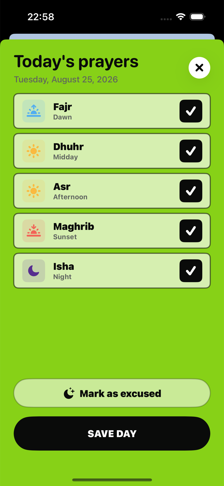

PRAYER CHECKLIST
A simple checklist for the five daily prayers.
- Fajr - the dawn prayer
- Dhuhr - the midday prayer
- Asr - the afternoon prayer
- Maghrib - the sunset prayer
- Isha - the night prayer
A daily prayer checklist does not need to be complicated. Its job is simply to give each of the five prayers a clear place, then help you remember what was completed when you review the day.

Why one daily view is useful
When the five prayers are split across notes, reminders and memory, reviewing the day can become harder than it needs to be. A single checklist removes that friction. You do not need to reconstruct the day; you only need to look at one screen.
Praylendar lists the prayers in their daily sequence and uses a distinct symbol for the time of day: sunrise for Fajr, sun for Dhuhr and Asr, sunset for Maghrib, and a crescent for Isha.
How to use the checklist
- Open the current day in Praylendar.
- Tap each prayer you completed.
- Review the five rows once.
- Save the day.
The process is intentionally short. The calendar is built from these daily entries, so there is no second step for updating a graph or streak.
What happens after you save
The day receives a color based on the number of completed prayers. One prayer and five prayers remain visibly different, while the detailed checklist remembers which specific prayers were selected. The result is useful both today and when reviewing the month later.
What if a day is excused?
Praylendar includes a separate excused status. It is visually distinct from a zero-prayer day and appears as a filled calendar square. Questions about when prayer is excused are matters of religious guidance; the app only records the status you choose.
Spellings can vary between languages and communities. Praylendar currently uses Fajr, Dhuhr, Asr, Maghrib and Isha in English.
Keep the checklist honest and light
The most useful record is the one you can maintain without turning it into a burden. Use the checklist as a memory aid, not as a judgment. A quiet day remains part of the calendar, and the next day still starts fresh.
Try the Praylendar method
See how the checklist becomes a color-coded calendar.